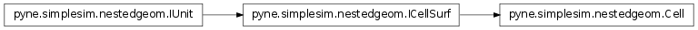
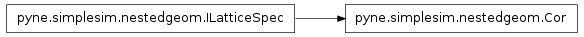
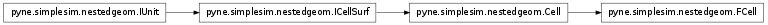
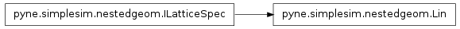
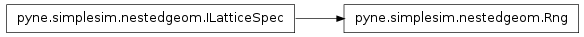
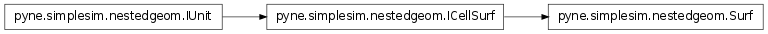
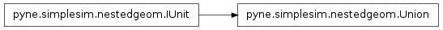
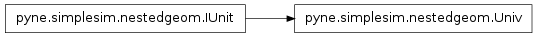

Nested Geometry – pyne.simplesim.nestedgeom¶
The classes in this module aid the specification of tally units in pyne.simplesim.cards.ICellSurfTally (see examples below). The class focuses on the ability to specify cells and surfaces that are nested within universes or other cells in nearly arbitrarily complex ways. Apart from making user input clearler, this class has methods that help with creating cell comments and mcnp strings.
The names of classes here are fairly short, so the user may not want to import the entire namespace. A suggested way to import the module is:
import .simplesim.nestedgeom as ng
An inheritance diagram of all the classes in this module can be found at Inheritance Diagrams.
Usage Examples¶
The subclasses of ICellSurfTally can take as input any subclass of IUnit. The following shows different ways in which complex units can be built. Here it is assumed that there is a cell named ‘1’ in the system, a surface named ‘1’ in the system, a universe named ‘1’ in the system, etc. The unions represent averaging or totaling the units, depending on the type of tally.
| category | description | nestedgeom | mcnp |
|---|---|---|---|
| basic | surface 1 (s1) | s1 = Surf('1') | 1 |
| cell 1 (c1) | c1 = Cell('1') | 1 | |
| universe 1 (u1) | u1 = Univ('1') | U=1 | |
| union | union of s1 and s2 | Union(s1, s2) | (1 2) |
| (s1 | s2) | |||
| union of c1, c2, and c3 | Union(c1, c2, c3) | (1 2 3) | |
| (c1 | c2 | c3) | |||
| union of cells in u1 | Union(u1) | (U=1) | |
| nesting | s1 in filled cell 2 (fc2) | fc2 = FCell('2'): s1 < fc2 | (1 < 1) |
| s1.of(fc2) | |||
| c1 in fc3 in fc3 | c1 < fc2 < fc3 | (1 < 2 < 3) | |
| c1.of( fc2.of(fc3) ) | |||
| s1 in union of fc2 and fc3 | s1 < Union(fc2, fc3) | (1 < (2 3)) | |
| s1.of( Union(fc2, fc3) ) | |||
| s1 in (union of fc2 and fc3) in fc4 | s1 < Union(fc2, fc3) < fc4 | (1 < (2 3) < 4) | |
| s1.of( Union(fc2, fc3).of(fc4) ) | |||
| s1 in u1 in fc4 | s1 < u1 < fc4 | (1 < U=1 < 4) | |
| s1.of( u1.of(fc4) ) | |||
| vectorized | (over s1 and s2) in fc2 | ng.Vec(s1, s2) < fc2 | (1 2 < 2) |
| ng.Vec(s1, s2).of(fc2) | |||
| (s1 & s2) < fc2 | |||
| s1 in (over fc2 and fc3) | s1 < ng.Vec(fc2, fc3) | (1 < 2 3) | |
| s1 < (fc2 & fc3) | |||
| lattice | s1 in (union of fc2 and (fc3 in lattice elem 5)) in fc4 | la = Lin(5): s1 < (fc2 | FCell('3', la)) < fc4 | (1 < (2 3[5]) < 4 |
| s1 < (fc2 | fc3.lat(la)) < fc4 | |||
| s1 in (fc2 in lattice x range 0:1, y range 0:2, z range 0:3) | s1 < fc2.lat(Rng([0,1], [0,2], [0,3]) | (1 < 2[0:1 0:2 0:3]) | |
| s1 in (fc2 in lattice coord (0, 1, 2)) | s1 < fc2.lat(Cor([0, 1, 2])) | (1 < 2[0 1 2]) | |
| s1 in (fc2 in lattice coords (0, 1, 2), (3, 2, 1)) | s1 < fc2.lat( Cor([ [0, 1, 2], [3, 2, 1]]) ) | (1 < 2[0 1 2, 3 2 1]) |
- class pyne.simplesim.nestedgeom.Cell(name)[source]¶
The user uses this class directly to reference a cell in the system definition for tallying.

Parameters : name : str
Name of the surface or cell. Depending on the subclass, the name is looked up appropriately in the system definition to obtain the surface or cell number.
- class pyne.simplesim.nestedgeom.Cor(points=[0, 0, 0])[source]¶
A list of lattice element coordinates (in indices).

Parameters : points : 3-element list of int, list of lists, optional
Coordinates of a lattice element, or a list of coordinates.
Examples
The following work:
latspec = Cor() latspec = Cor([1, 2, 3]) latspec = Cor([ [1, 2, 3], [-1, 3, -2]])
- class pyne.simplesim.nestedgeom.FCell(name, lat_spec=None)[source]¶
This is subclassed from Cell. Its name stands for filled cell. It is to be used for higher-level cells (closer to the real world), and has an additional attribute to specify specific lattice elements from this cell if it is a lattice cell.

Parameters : name : str
See ICellSurf.
lat_sec : subclass of LatticeSpec
- class pyne.simplesim.nestedgeom.ICellSurf(name)[source]¶
Abstract base class for surfaces and cells in the lowest level of the nested geometry. The user directly uses the subclasses of this class. For cells in higher levels of nesting (e.g. closer to the real world), see FCell.
Parameters : name : str
Name of the surface or cell. Depending on the subclass, the name is looked up appropriately in the system definition to obtain the surface or cell number.
- class pyne.simplesim.nestedgeom.ILatticeSpec[source]¶
Abstract base class for lattice element specifiers. The user does not use this class directly. There are 3 subclasses:
- class pyne.simplesim.nestedgeom.IUnit(up=None, down=None)[source]¶
Abstract base class for tally units. The user does not use this class directly.
Currently, the two keyword arguments are not actually used, but are sometimes set directly, after initialization.
- class pyne.simplesim.nestedgeom.Lin(linear_index)[source]¶
A single linear index of a lattice element.

Parameters : linear_index : int
Linear (1-D) of a lattice element for the lattice cell that this specifier becomes a part of.
- class pyne.simplesim.nestedgeom.Rng(x_bounds=[0, 0], y_bounds=[0, 0], z_bounds=[0, 0])[source]¶
A range of lattice elements.

Parameters : x_bounds : 2-element list of int, optional
Something like [0,5] for lattice elements i=0 through i=5. First element is less than the second element. Don’t specify to leave as [0, 0].
y_bounds : 2-element list of int, optional
First element is less than the second element. Don’t specify to leave as [0, 0].
z_bounds : 2-element list of int, optional
First element is less than the second element. Don’t specify to leave as [0, 0].
Examples
In the following, there is no y dimension:
myrange = Rng([0, 5], z_bounds=[0, 2])
- class pyne.simplesim.nestedgeom.Surf(name)[source]¶
The user uses this class directly to reference a surface in the system definition for tallying.

Parameters : name : str
Name of the surface or cell. Depending on the subclass, the name is looked up appropriately in the system definition to obtain the surface or cell number.
- class pyne.simplesim.nestedgeom.Union(*args)[source]¶
A union of surfaces, cells, or of a single universe.

Parameters : *args : list of instances of IUnit subclasses.
- class pyne.simplesim.nestedgeom.Univ(name)[source]¶
A universe. It is used in higher levels of nesting (closer to the real world). The class, given the name of a universe in the system, looks up the appropriate universe number.

Parameters : name : str
Name of the universe in the system definition.
- class pyne.simplesim.nestedgeom.Vec(*args)[source]¶
A “vector” of surfaces or cells. This class named after the vectorized notation that can be used in MATLAB, as this class allows the specification of multiple units of input in a single unit. Typically, a Vec is the first or last element in a nested unit. The following are two example usages of this class, and their equivalent in comment as two separate units:
# Surf('A') < FCell('C') Surf('B') < FCell('C') Vec(Surf('A'), Surf('B')) < FCell('C') # Surf('A') < FCell('C') Surf('A') < FCell('D') Surf('A') < Vec(FCell('C'), FCell('D'))

Table Of Contents
Previous topic
Cards Module – pyne.simplesim.cards
Next topic
Definition Module – pyne.simplesim.definition